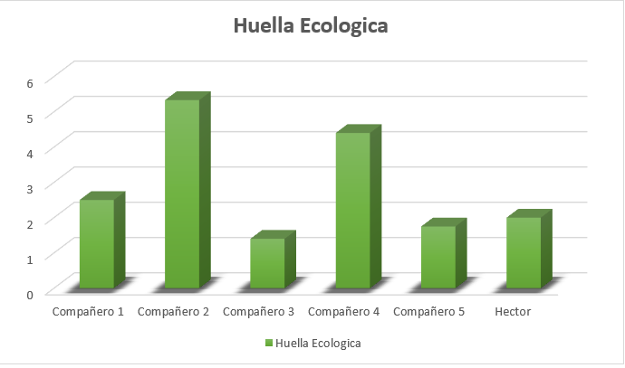

Resultado de mi Huella Ecológica


Seguramente hayas escuchado hablar sobre la huella ecológica, pero ¿Qué es la huella ecológica?, la huella
ecológica es un indicador para conocer el grado de impacto de la sociedad sobre el ambiente, es una
herramienta para determinar cuánto espacio terrestre y marino se necesita para producir todos los recursos y
bienes que se consumen, así como la superficie para absorber los desechos que se generan, usando la
tecnología actual.
Todos los seres vivos necesitamos recursos del ecosistema tierra para cubrir nuestras necesidades.
Necesitamos de un territorio que nos proporcione alimentos, cobijo, materiales y otros individuos con los
que relacionarnos para así poder desarrollarnos. De esta forma, dejamos una huella sobre el terreno porque
reducimos la superficie de ecosistemas productivos: un rastro de la cantidad de naturaleza de la que hacemos
uso. En definitiva, la huella ecológica indica cómo afecta nuestra forma de vida al entorno y calcula la
superficie de tierras productivas necesarias para satisfacer nuestros consumos de recursos naturales al año
y para asimilar los residuos generados.
Todas las decisiones que como consumidores tomamos en nuestra vida cotidiana tienen un impacto sobre el
planeta. Ese impacto ambiental se expresa como la cantidad de terreno biológicamente productivo que se
necesita por persona para producir los recursos necesarios para mantener su estilo de vida.
La huella ecológica de cada ser humano es de 2.7 hectáreas. Sin embargo, nuestro planeta tan sólo es capaz
de otorgar a cada uno de sus habitantes cerca de 1.8 hectáreas (WWF2012). Esta diferencia indica que cada
uno de nosotros utiliza más espacio para cubrir sus necesidades de lo que el planeta puede
darnos.
Calcule mi huella ecológica, esta se baso en el tamaño de mi casa ya que, dependiendo del tamaño de tu casa,
departamento en donde vides se determina el consumo de energía, otra cosa a tomar en cuenta es si tienes
aire acondicionado, aparatos electrónicos que sean economizadores, plantas.
El medio en el que te transportas y el tiempo que te haces de ir de un lugar a otro también se toma en
cuenta ya que el motor de combustión es la opción más cara y más contaminante que existe para el transporte,
es importante reducir el consumo de carne, si lo haces permitirá reducir mucho tu huella ecológica así mismo
me preguntaron si compraba alimentos frescos o empaquetados, cuantos contenedores para la separación de
residuos tenia en casa, al final de responder todas las preguntas salió mi resultado de mi huella
ecológica.
Comparando mi resultado con el de mis compañeros llegue a la conclusión de que la mayoría no tenemos un
consumo de huella ecológica muy alto, a continuación, presento una tabla de los resultados.

Como se puede mostrar en la grafica hay 2 compañeros que en los resultados de su huella ecológica son mas
altos de lo normal, es por eso que puse una lista con acciones que podemos hacer para disminuir nuestra
huella ecológica.
* Uso de bombillas de bajo consumo.
* Instalación de paredes y techos aislantes.
* Ventanas de doble cristal.
* Utilización de aparatos de eficiencia energética.
* Reciclaje correcto de todo aquello que se consuma.
* Utilizar el transporte público en vez del coche privado, para ayudar a reducir la contaminación del
aire.
* No conducir coches contaminantes.
* Caminar o usar la bicicleta como formas más sostenibles de moverse por la ciudad.
* Viajar en tren o autobús mejor que en avión.
* Disminuir el uso del aire acondicionado en verano.
* Desenchufar los aparatos electrónicos cuando no se estén usando.
* Secar la ropa de manera natural sin necesidad de usar la secadora.
* Dar una segunda vida a todos los objetos.
* Reducir el consumo de agua en todos sus usos.
La mayoría de las acciones anteriormente mencionadas las puedes aplicar desde este momento para que tu
consumo de huella ecológica disminuya. Comenta con tus familiares y amigos sobre lo importante que es la
huella ecológica, invítalos a calcular su huella ecológica y a realizar las acciones anteriormente
mencionadas.